Chapitre 10 : Géométrie dans l'espace \large Terminale spécialité
Terminale spécialité · Chapitre 10 — Géométrie dans l'espace · cours de Frederik de Peyrelongue
I. Positions relatives de droites et de plans de l'espace
Positions relatives de deux droites
Deux droites de l'espace sont soit coplanaires (contenues dans un même plan), soit non coplanaires.
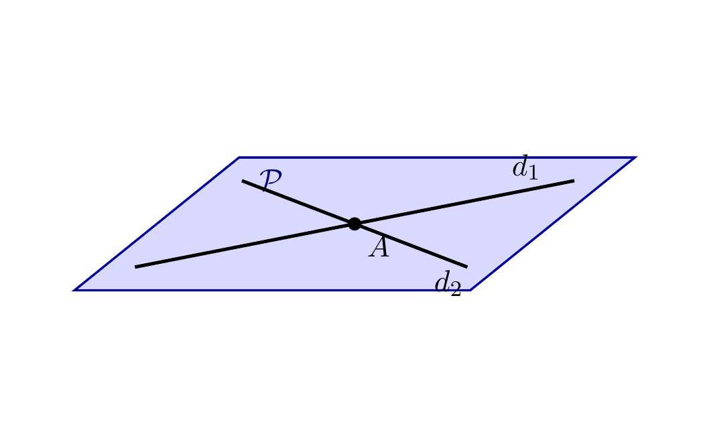 | 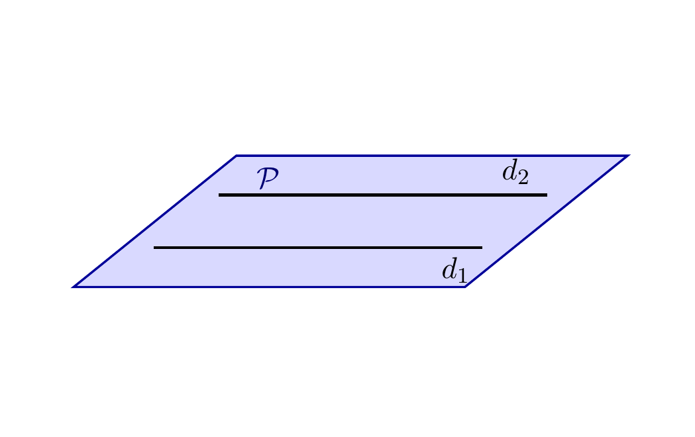 | 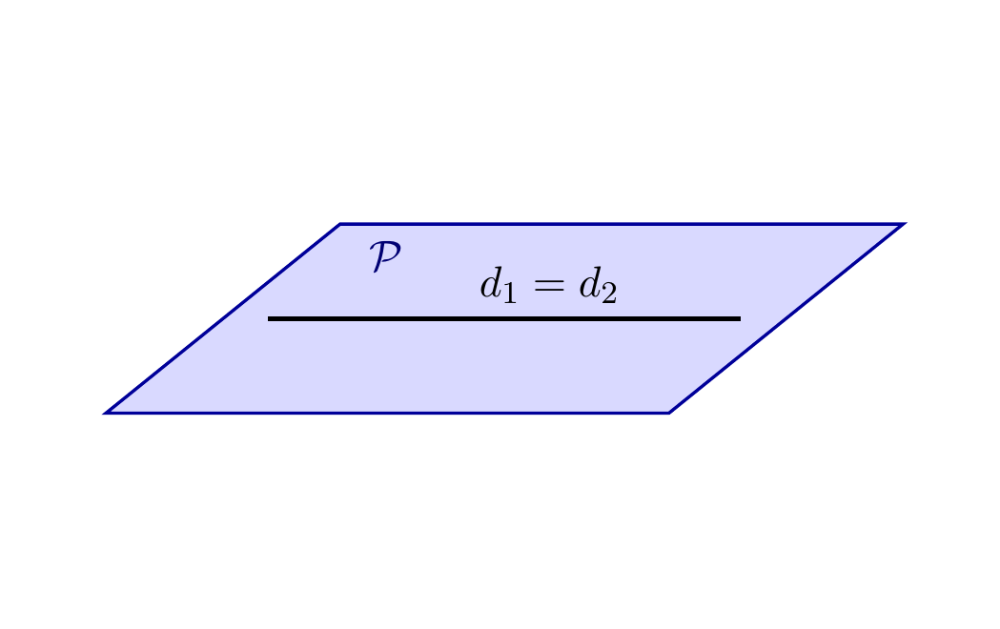 | 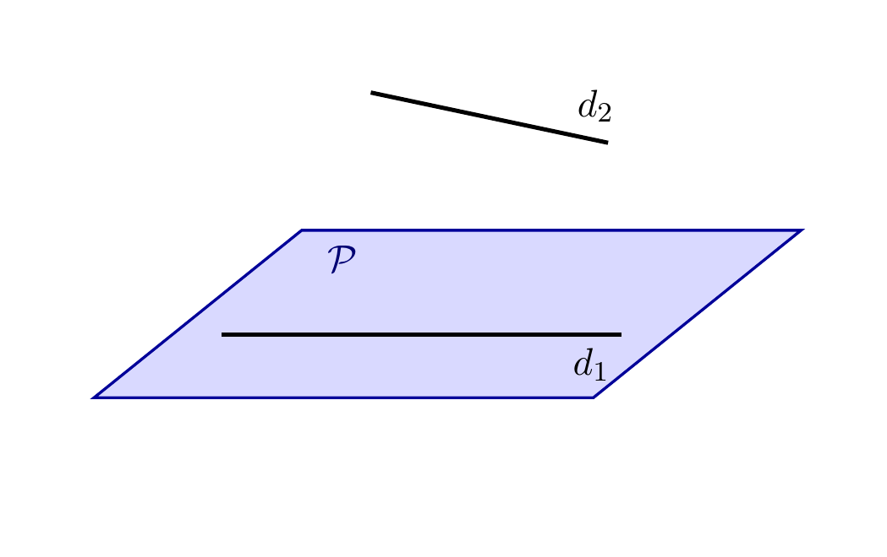 |
| sécantes | strictement parallèles | confondues | non coplanaires |
$ABCDEFGH$ est un cube.
- Les droites $(EG)$ et $(FG)$ appartiennent au même plan $(EFG)$ et sont sécantes en $G$.
- Les droites $(AD)$ et $(FG)$ appartiennent au même plan $(ADFG)$ et sont parallèles.
- Les droites $(AD)$ et $(CG)$ sont non coplanaires.
\fig[0.36\textwidth]{image5.png}
1.2 Positions relatives de deux plans
Deux plans de l'espace sont soit sécants, soit parallèles.
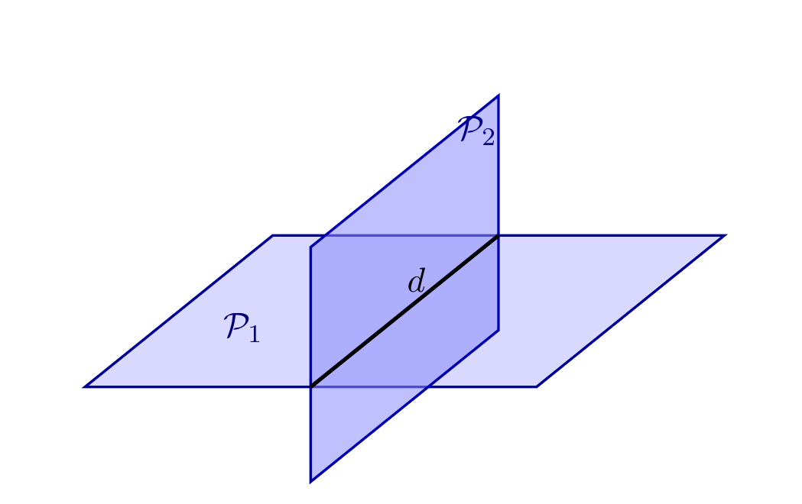 | 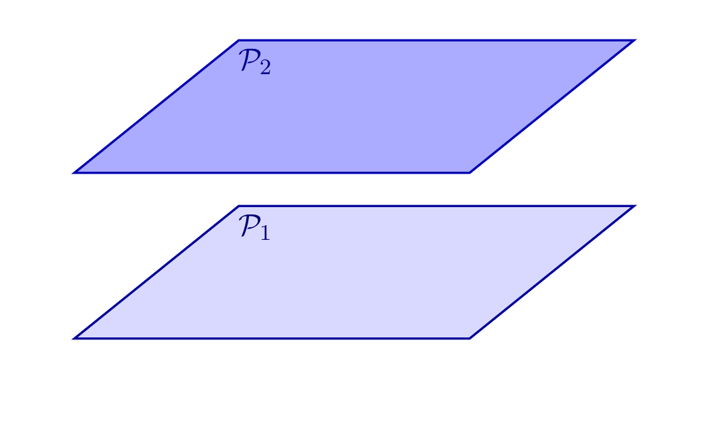 | 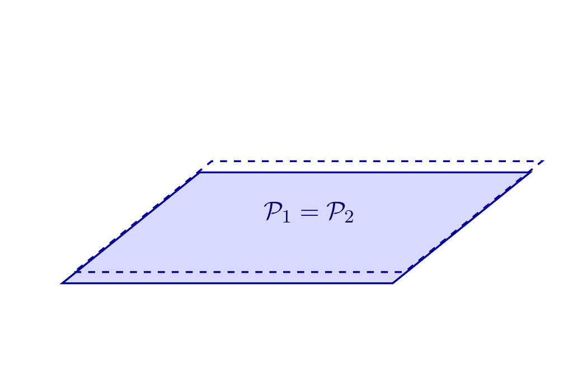 |
| sécants suivant la droite $d$ | strictement parallèles | confondus |
$ABCDEFGH$ est un parallélépipède rectangle.
- Les plans $(BCG)$ et $(BCE)$ sont sécants suivant la droite $(BC)$.
- Les plans $(ABC)$ et $(EFG)$ sont parallèles.
\fig[0.34\textwidth]{image9.png}
Positions relatives d'une droite et d'un plan
Une droite et un plan de l'espace sont soit sécants, soit parallèles.
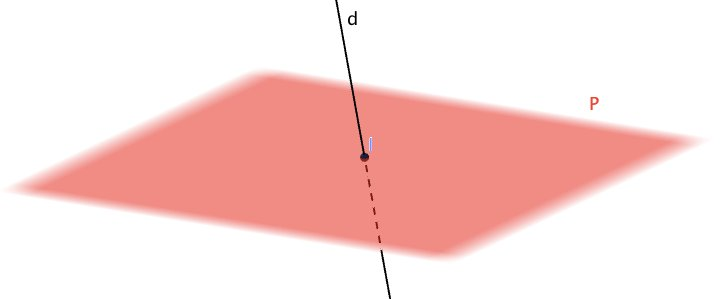 | 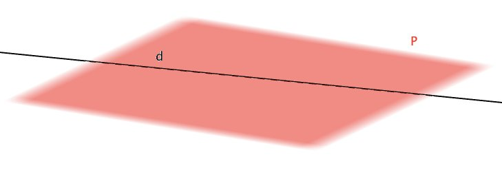 | 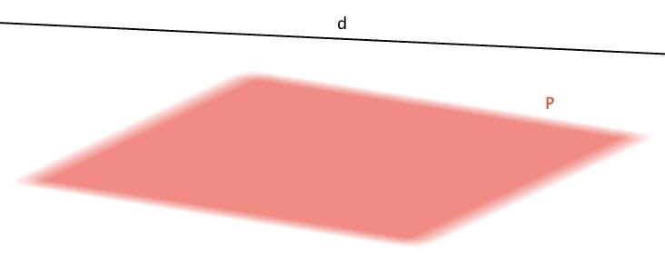 |
| sécants en un point $I$ | $d$ est incluse dans $P$ | strictement parallèles |
$ABCDEFGH$ est un cube.
- La droite $(GI)$ et le plan $(ABC)$ sont sécants en $I$.
- La droite $(EG)$ est incluse dans le plan $(EFG)$.
- La droite $(EG)$ et le plan $(ABC)$ sont parallèles.
\fig[0.32\textwidth]{image13.png}
Combinaisons linéaires de vecteurs de l'espace
Soit $\vec{u}$, $\vec{v}$ et $\vec{w}$ trois vecteurs de l'espace.
Tout vecteur de la forme $a\vec{u}+b\vec{v}+c\vec{w}$, avec $a$, $b$ et $c$ réels, est appelé combinaison linéaire des vecteurs $\vec{u}$, $\vec{v}$ et $\vec{w}$.
À l'aide du cube $ABCDEFGH$, représenter les vecteurs $\vec{a}$ et $\vec{b}$ donnés par
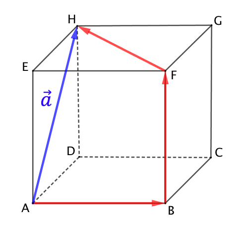
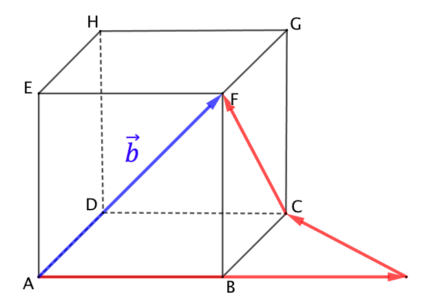
Correction.
$\vec{a}=\vect{AB}+\vect{CG}+\vect{FH}$.
À l'aide du cube, on construit un chemin d'origine $A$ et formé des vecteurs $\vect{AB}$, $\vect{CG}$ (soit $\vect{BF}$) et $\vect{FH}$. On obtient $\vec{a}=\vect{AH}$.
$\vec{b}=2\vect{AB}+\vect{BD}-\vect{FC}=2\vect{AB}+\vect{BD}+\vect{CF}$.
On construit de même un chemin d'origine $A$ : on obtient $\vec{b}=\vect{AF}$.
II. III Droites et plans de l'espace
3.1 Direction d'une droite de l'espace
On appelle vecteur directeur de $d$ tout vecteur non nul qui possède la même direction que la droite $d$.
Soit une droite $d$ passant par un point $A$ et de vecteur directeur $\vec{u}$. Un point $M$ appartient à la droite $d$ si et seulement si les vecteurs $\vect{AM}$ et $\vec{u}$ sont colinéaires.
Deux droites de l'espace de vecteurs directeurs $\vec{u}$ et $\vec{v}$ sont parallèles si et seulement si les vecteurs $\vec{u}$ et $\vec{v}$ sont colinéaires.
Direction d'un plan de l'espace
Deux vecteurs non nuls et non colinéaires déterminent la direction d'un plan.
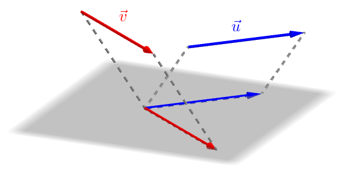
Soit un plan $P$ passant par un point $A$ et dirigé par deux vecteurs $\vec{u}$ et $\vec{v}$ non colinéaires.
Un point $M$ appartient au plan $P$ si et seulement si
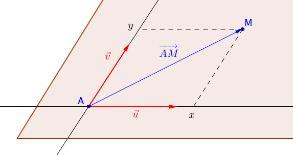
Soit deux points $B$ et $C$ tels que $\vec{u}=\vect{AB}$ et $\vec{v}=\vect{AC}$.
$\vec{u}$ et $\vec{v}$ ne sont pas colinéaires, donc $\left(A\,;\vec{u}\,;\vec{v}\right)$ est un repère du plan $(ABC)$. Dans ce repère, tout point $M$ de coordonnées $(x\,;y)$ est tel que
Réciproquement, soit $M$ un point de l'espace tel que $\vect{AM}=x\vec{u}+y\vec{v}$.
Soit $N$ le point du plan $(ABC)$ de coordonnées $(x\,;y)$ dans le repère $\left(A\,;\vec{u}\,;\vec{v}\right)$. Alors $\vect{AN}=x\vec{u}+y\vec{v}$, et donc $\vect{AN}=\vect{AM}$.
$M$ et $N$ sont confondus, donc $M$ appartient à $(ABC)$.
Remarque. Un plan est donc totalement déterminé par un point et deux vecteurs non colinéaires.
Deux plans déterminés par le même couple de vecteurs non colinéaires sont parallèles.
$\left(A\,;\vec{u}\,;\vec{v}\right)$ et $\left(B\,;\vec{u}\,;\vec{v}\right)$.
- Si $P$ et $P'$ sont confondus, la démonstration est triviale.
Dans la suite, $P$ et $P'$ ne sont pas confondus. Supposons que $P$ et $P'$ possèdent un point $M$ en commun.
Alors, dans $P$, on a $\vect{AM}=x\vec{u}+y\vec{v}$, où $(x\,;y)$ sont les coordonnées de $M$ dans $P$.
Et dans $P'$, on a $\vect{BM}=x'\vec{u}+y'\vec{v}$, où $(x'\,;y')$ sont les coordonnées de $M$ dans $P'$.
Donc $\vect{AB}=(x-x')\vec{u}+(y-y')\vec{v}$, donc $B$ appartient à $P$.
Donc le repère $\left(B\,;\vec{u}\,;\vec{v}\right)$ est un repère de $P$ et donc $P$ et $P'$ sont confondus, ce qui est contraire à l'hypothèse de départ.
$P$ et $P'$ n'ont aucun point en commun et sont donc parallèles.
Conséquence. Pour démontrer que deux plans sont parallèles, il suffit de montrer que deux vecteurs non colinéaires de l'un des plans sont respectivement colinéaires à deux vecteurs non colinéaires de l'autre.
III. Bases et repères de l'espace
Vecteurs coplanaires et bases de l'espace
Trois vecteurs de l'espace sont coplanaires s'ils possèdent des représentants appartenant à un même plan.
Trois vecteurs $\vec{u}$, $\vec{v}$ et $\vec{w}$ de l'espace sont coplanaires s'il existe un couple de réels $(x\,;y)$ tel que
Soit $\vec{\imath}$, $\vec{\jmath}$ et $\vec{k}$ trois vecteurs de l'espace non coplanaires.
Pour tout vecteur $\vec{u}$, il existe un unique triplet $(x\,;y\,;z)$ tel que
$\vec{u}$.
Soit $P$ le plan de repère $\left(A\,;\vec{\imath}\,;\vec{\jmath}\right)$.
Si $B$ appartient à $P$, alors $\vect{AB}$ se décompose suivant les vecteurs $\vec{\imath}$ et $\vec{\jmath}$.
Supposons que $B$ n'appartienne pas à $P$. Soit $d$ la droite passant par $B$ de vecteur directeur $\vec{k}$. Comme $\vec{k}$ n'est pas colinéaire avec $\vec{\imath}$ et $\vec{\jmath}$, la droite $d$ coupe le plan $P$ en un point $C$. On peut écrire
$\vect{AC}$ appartient au plan $P$, donc il existe un couple $(x\,;y)$ tel que $\vect{AC}=x\vec{\imath}+y\vec{\jmath}$.
$\vect{CB}$ est colinéaire à $\vec{k}$, donc il existe un réel $z$ tel que $\vect{CB}=z\vec{k}$.
Il existe donc un triplet $(x\,;y\,;z)$ tel que $\vect{AB}=\vec{u}=x\vec{\imath}+y\vec{\jmath}+z\vec{k}$.
Unicité. On suppose que l'on ait les deux écritures distinctes :
Alors
Supposons que l'une au moins des trois différences n'est pas nulle, par exemple $z-z'\neq0$. Donc
et dans ce cas, les vecteurs $\vec{\imath}$, $\vec{\jmath}$ et $\vec{k}$ seraient coplanaires, ce qui est exclu.
Les trois différences $x'-x$, $y'-y$ et $z'-z$ sont donc nulles.
Soit $\vec{\imath}$, $\vec{\jmath}$ et $\vec{k}$ trois vecteurs non coplanaires de l'espace.
On appelle base de l'espace le triplet $\left(\vec{\imath}\,;\vec{\jmath}\,;\vec{k}\right)$.
Repère de l'espace
Soit $\vec{\imath}$, $\vec{\jmath}$ et $\vec{k}$ trois vecteurs non coplanaires de l'espace. $O$ est un point de l'espace.
On appelle repère de l'espace le quadruplet $\left(O\,;\vec{\imath}\,;\vec{\jmath}\,;\vec{k}\right)$.
Remarques. $O$ est appelé l'origine du repère.
La décomposition $\vect{OM}=x\vec{\imath}+y\vec{\jmath}+z\vec{k}$ donne les coordonnées $\begin{pmatrix}x\\y\\z\end{pmatrix}$ du point $M$.
$x$ est l'abscisse de $M$, $y$ est l'ordonnée de $M$ et $z$ est la cote de $M$.
- De même, la décomposition $\vec{u}=x\vec{\imath}+y\vec{\jmath}+z\vec{k}$ donne les coordonnées $\begin{pmatrix}x\\y\\z\end{pmatrix}$ du vecteur $\vec{u}$.
On retrouve dans l'espace des propriétés déjà connues dans le plan, comme les suivantes :
Soit deux points de l'espace $A\begin{pmatrix}x_A\\y_A\\z_A\end{pmatrix}$ et $B\begin{pmatrix}x_B\\y_B\\z_B\end{pmatrix}$.
- Les coordonnées du vecteur $\vect{AB}$ sont $\begin{pmatrix}x_B-x_A\\y_B-y_A\\z_B-z_A\end{pmatrix}$.
- Les coordonnées du milieu du segment $[AB]$ sont $\begin{pmatrix}\dfrac{x_A+x_B}{2}\\[6pt]\dfrac{y_A+y_B}{2}\\[6pt]\dfrac{z_A+z_B}{2}\end{pmatrix}$.
IV. Représentation paramétrique
Représentation paramétrique d'une droite
Soit une droite $d$ définie par un point $A\left(x_{A}\,;y_{A}\,;z_{A}\right)$ et un vecteur directeur $\vec{u}\left(a\,;b\,;c\right)$.
La droite $d$ admet alors un système d'équations paramétriques, appelé représentation paramétrique, de la forme :
sont colinéaires :
On obtient le système suivant :
- Pour une demi-droite, $t\in\left]-\infty\,;\alpha\right]$ ou $t\in\left[\alpha\,;+\infty\right[$ et, pour un segment, $t\in\left[\alpha\,;\beta\right]$.
- La représentation paramétrique d'une droite n'est pas unique : on peut prendre un autre point sur la droite et un autre vecteur directeur colinéaire au premier.
Applications
Donner une représentation paramétrique de la droite $d$ définie par :
La droite $d$ a pour représentation paramétrique :
$A$ et $B$ ont pour coordonnées respectives $A\left(-2\,;1\,;0\right)$ et $B\left(2\,;3\,;1\right)$. Donner une représentation paramétrique de chacun des ensembles suivants : la droite $(AB)$, le segment $[AB]$ et la demi-droite $[BA)$.
Un vecteur directeur de la droite $(AB)$ est $\vect{AB}=\left(4\,;2\,;1\right)$.
La droite $(AB)$ a pour représentation paramétrique :
\[ (AB)\ \begin{cases} x=-2+4t\\ y=1+2t\\ z=t \end{cases} \qquad,\ t\in\R \]Pour déterminer l'intervalle du paramètre $t$ pour le segment $[AB]$, le point $A$ est défini avec $t=0$ et le point $B$ avec $t=1$. On a donc :
\[ [AB]\ \begin{cases} x=-2+4t\\ y=1+2t\\ z=t \end{cases} \qquad,\ t\in\left[0\,;1\right] \]Pour la demi-droite $[BA)$, le paramètre $t$ doit être inférieur à $1$ pour contenir $A$. On a donc :
\[ [BA)\ \begin{cases} x=-2+4t\\ y=1+2t\\ z=t \end{cases} \qquad,\ t\in\left]-\infty\,;1\right] \]
Les systèmes suivants sont-ils associés à une même droite ?
Soit $d_{1}$ et $d_{2}$ les droites associées à ces systèmes. On a $d_{1}=d_{2}$ si leurs vecteurs directeurs $\vec{u}_{1}$ et $\vec{u}_{2}$ sont colinéaires et si $d_{1}$ et $d_{2}$ ont un point commun.
À l'aide de ces systèmes, on déduit comme vecteurs directeurs respectifs :
\[ \vec{u}_{1}=\left(2\,;1\,;-3\right) \quad\text{et}\quad \vec{u}_{2}=\left(-6\,;-3\,;9\right). \]D'où $\vec{u}_{2}=-3\vec{u}_{1}$ : les vecteurs $\vec{u}_{1}$ et $\vec{u}_{2}$ sont colinéaires.
Prenons un point de $d_{1}$, par exemple avec $t=0$, on obtient $A\left(-1\,;0\,;1\right)$. Cherchons à déterminer $s$ pour que $A$ soit sur $d_{2}$, d'où :
\[ \begin{cases} 3-6s=-1\\ -3s+2=0\\ 9s-5=1 \end{cases} \iff s=\frac{2}{3} \ \text{vérifié dans les 3 équations} \]
On peut déterminer $s$ donc $A$ est sur $d_{2}$. On en déduit que $d_{1}=d_{2}$.
On donne les droites $d_{1}$ et $d_{2}$ de représentations paramétriques suivantes :
Démontrer que ces droites sont sécantes et déterminer leur point d'intersection.
Les droites $d_{1}$ et $d_{2}$ sont sécantes si elles possèdent un unique point commun. On résout alors le système suivant :
Les droites $d_{1}$ et $d_{2}$ sont sécantes en $I\left(0\,;-3\,;1\right)$.
Représentation paramétrique d'un plan
Soit un plan $(P)$ défini par un point $A\left(x_{A}\,;y_{A}\,;z_{A}\right)$ et deux vecteurs non colinéaires $\vec{u}\left(a\,;b\,;c\right)$ et $\vec{v}\left(\alpha\,;\beta\,;\gamma\right)$.
Le plan $(P)$ admet alors un système d'équations paramétriques, appelé représentation paramétrique, de la forme :
d'où le système.
La représentation paramétrique d'un plan n'est pas unique.
Soit les points $A\left(-1\,;2\,;5\right)$, $B\left(1\,;0\,;-2\right)$ et $C\left(0\,;2\,;-3\right)$. Montrer que les points $A$, $B$, $C$ définissent un plan dont on donnera une représentation paramétrique.
Les coordonnées de $\vect{AB}$ et $\vect{AC}$ ne sont pas proportionnelles, donc les vecteurs $\vect{AB}$ et $\vect{AC}$ ne sont pas colinéaires. Les points $A$, $B$ et $C$ définissent le plan $(ABC)$.
Une représentation paramétrique du plan $(ABC)$ est :